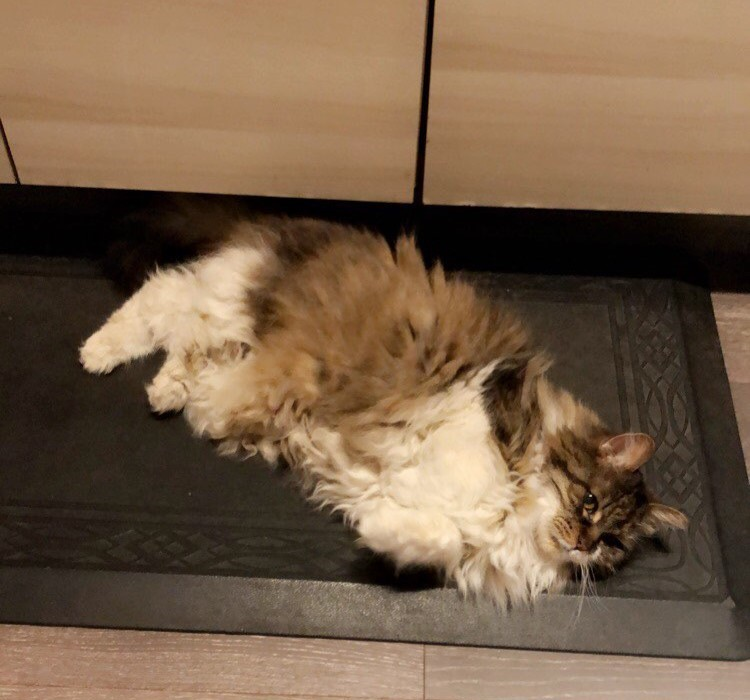

Mew.
2002-2020

According to the vet, mew was an "ancient" cat, considering she lived a long life of eighteen years. She made any day 100% better by simply being the laziest yet funniest cat ever. She was a huge fan of cuddling up by my side, playing with q-tips, and hopping onto furniture that she wasn't allowed to hop on...but we still loved her for it.
